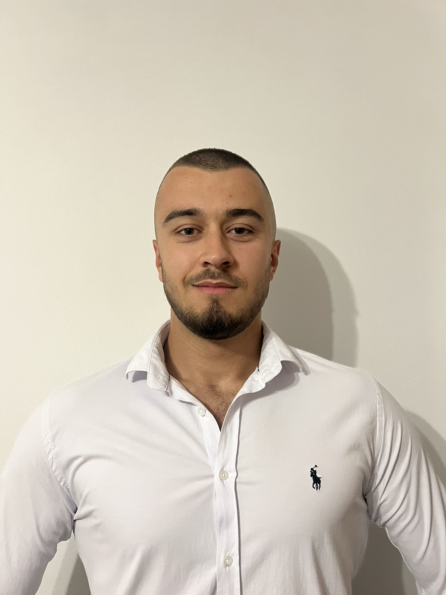

Web Developer
Ambitious IT student at International Burch University with a strong background in telecommunications from high school. Enhanced English proficiency through an Erasmus+ program in city of Vigo, Spain, interacting with international students. Passionate about improving programming skills, currently focused on web and mobile programming. Former competitive swimmer with over 10 years of rigorous training, continuing fitness regime in the gym.
Telecommunication, High School of Electrical Engineering, Sarajevo
Bachelor of Information Technology (In Progress), Expected Graduation: 2025, International Burch University, Sarajevo
As an Online Seller, I posted clothes and electronic devices like phones and headphones on e-commerceplatforms. I managed productlistings, handled customer inquiries, processed orders, and ensured prompt delivery. I also optimized listings to boost sales and maintained accurate inventory.
As a Swimming Coach for more advanced kids, I created challenging practices to help improve their swimming skills. I gave feedback to keep them motivated and ensured everyone had a blast while learning. Also, I kept an eye on safety and helped prepare the team for local meets.